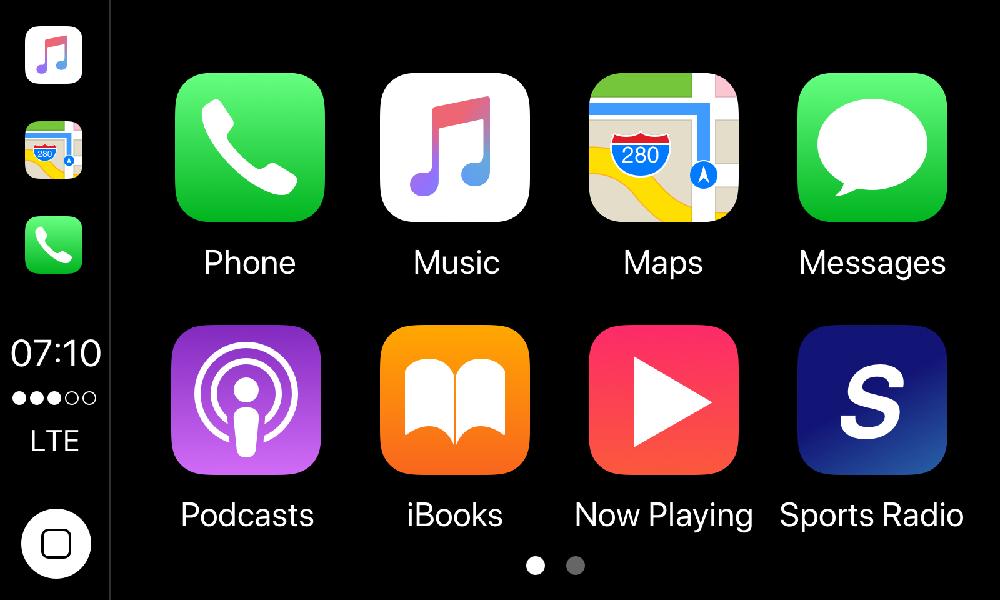
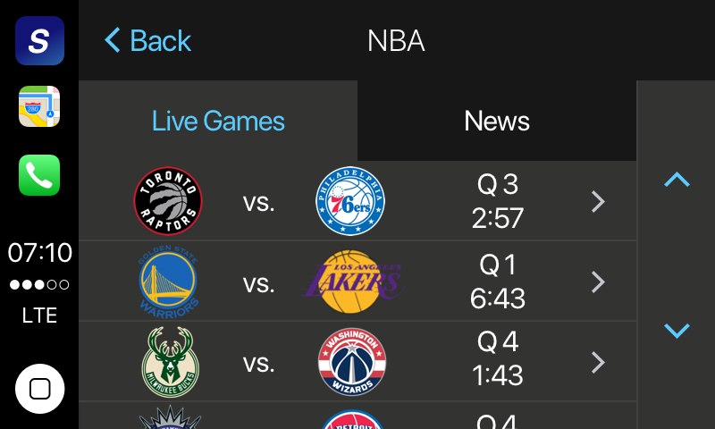
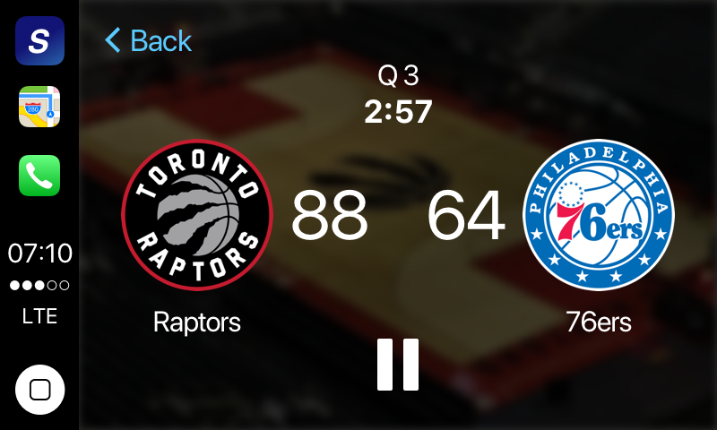
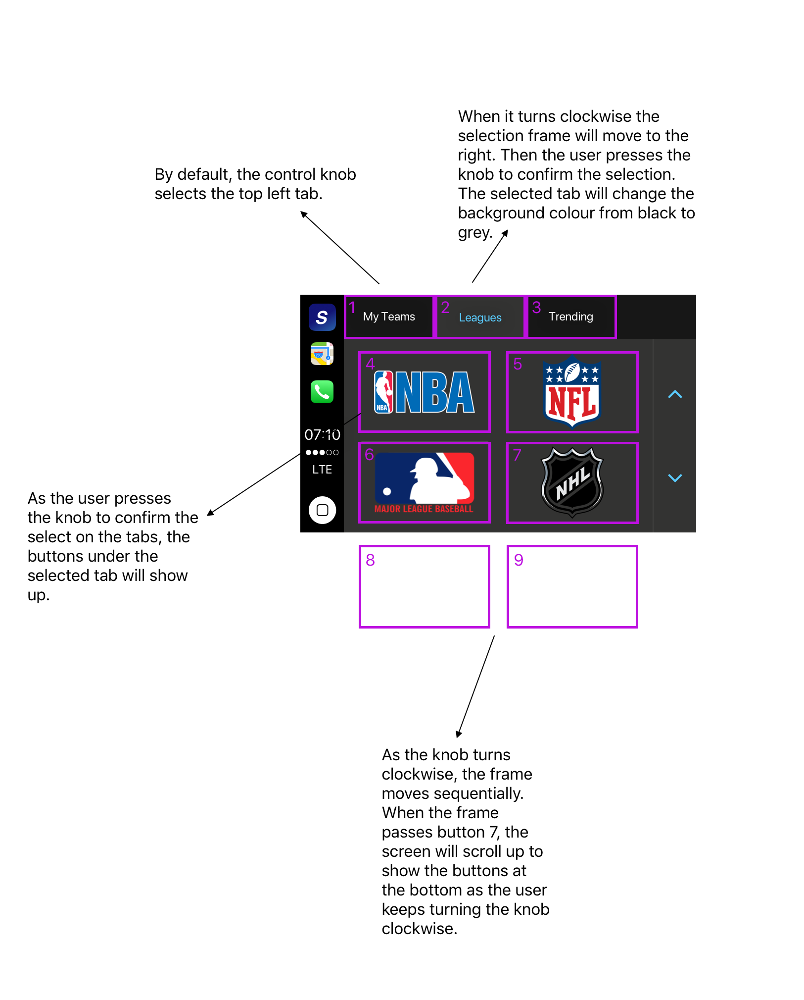

High-Fi Mockup
Overall Structure
- CarPlay home page

- Home screen
Logos of different sports leagues are added to the buttons.

- Game list
Since all games listed here are live, the scheduled date and game time in the mid-fi wireframe is removed. Instead, the list will show the current state.

- Live game
Team logos, names and basic game information are provided. The background is a blurred picture of the home team’s court, indicating the location of the game.

Alternative inputs
- Control Knob
Not all cars' infotainment systems are equipped with touch screens. Some of them still rely on physical gadgets as input devices. The UI of this CarPlay app also has to accommodate such needs. Here is a demonstration showing how it works when the user turns the knob clockwise.

Storyboard
Click the image to see the HD version.